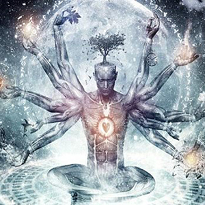

About unexplained
best episode to start with: season 1, episode #2, Ressurected Dreams
average episode length: 45 min
best quote: Perhaps some things are just better left unexplained
synopsis: This podcast is based on the mysterious qualites of life. Paranomal activites, ghosts, dissapearances, and alien encounters are all game for this podcast.
